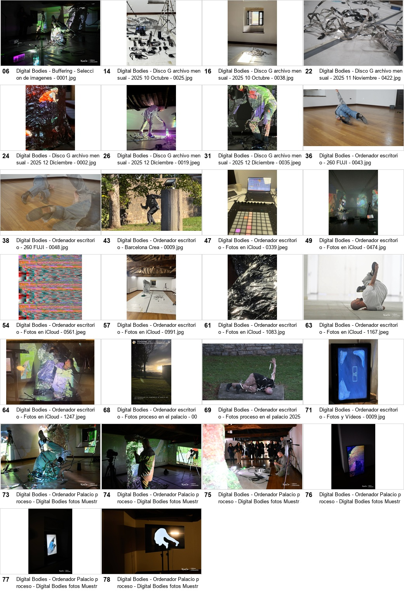
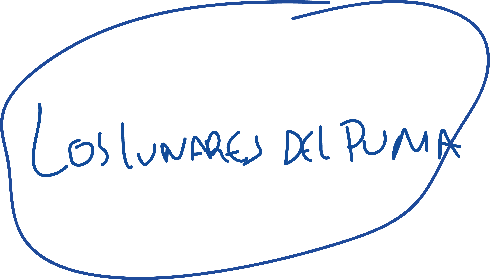
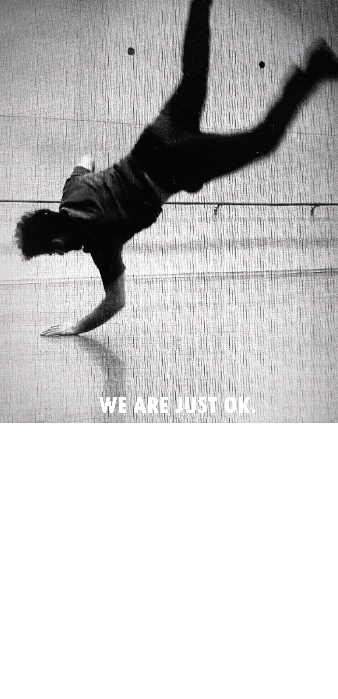
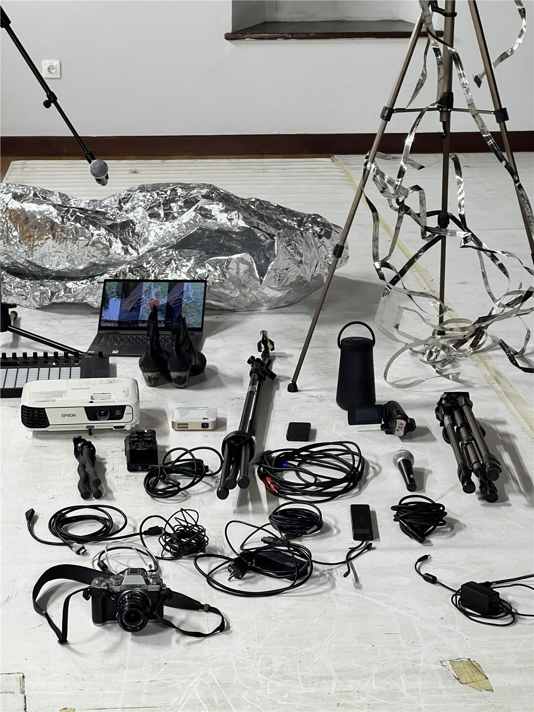
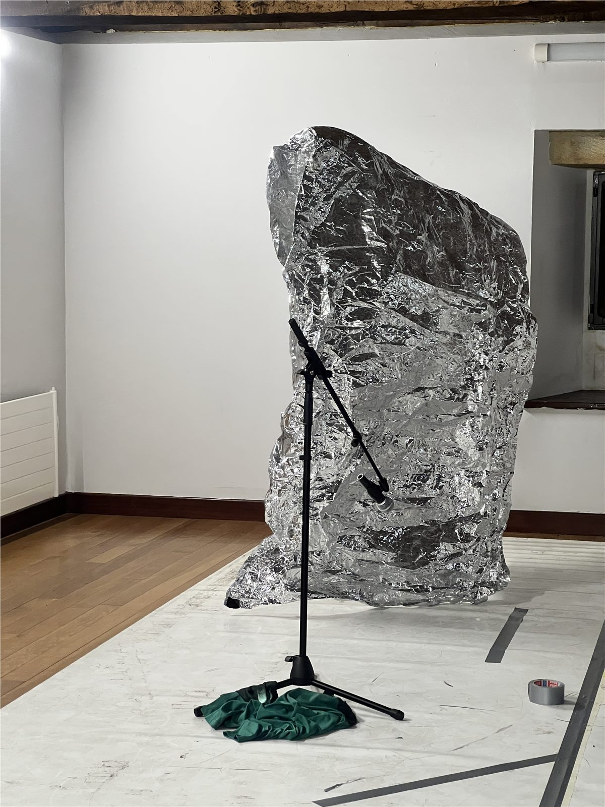
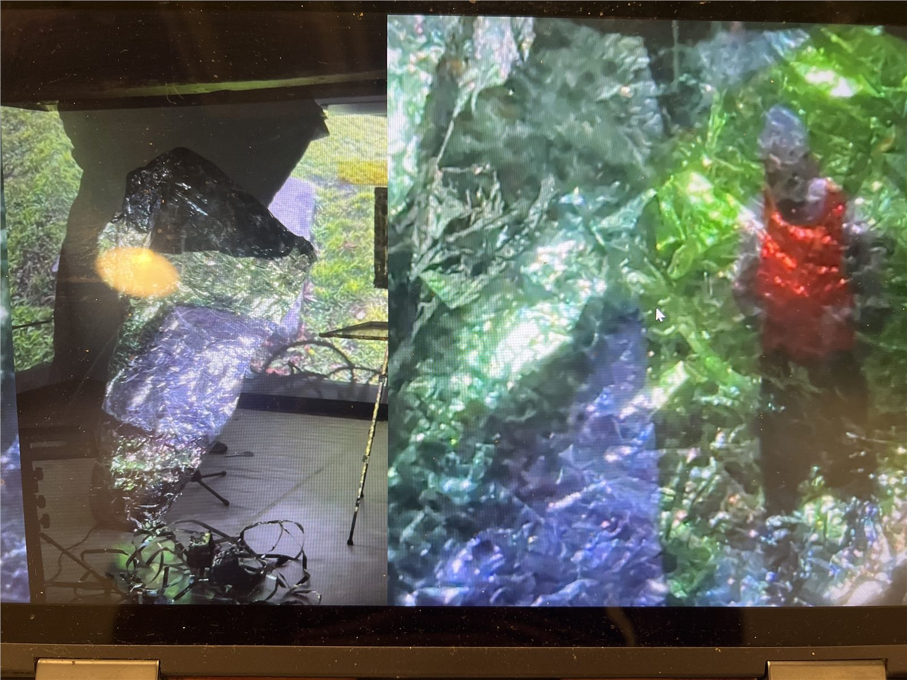
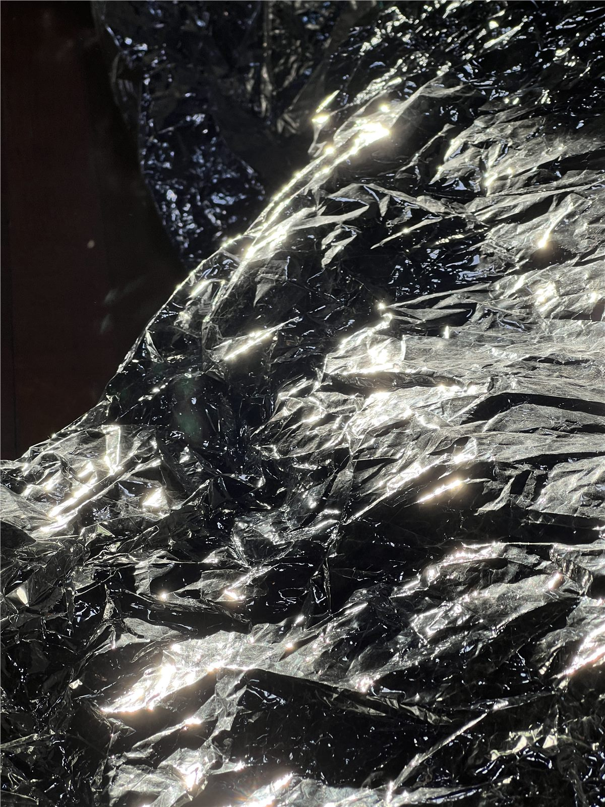

Je présente Sampling à Metalab à un moment très concret: je viens d'arriver à Bruxelles et je commence à construire ici une continuité de vie, de travail et de regard. Après presque vingt ans de pratique entre danse, hip hop, flamenco, technique, image et recherche, ce projet ouvre mon premier travail scénique individuel. Metalab m'intéresse comme un lieu d'accompagnement, de friction dramaturgique et d'entrée réelle dans l'écosystème artistique bruxellois.

C:/SAMPLING/METALAB_APPLICATION
archive body image archive body
FR / Sampling est la première oeuvre scénique individuelle d'Adrian Vega: une recherche chorégraphique où le corps agit comme archive, écran, capteur et sampler. NL / Sampling is het eerste individuele scenische werk van Adrian Vega: een choreografisch onderzoek waarin het lichaam functioneert als archief, scherm, sensor en sampler. EN / Sampling is Adrian Vega's first individual theatrical work: a choreographic research where the body acts as archive, screen, sensor and sampler.
status: research alive / first theatrical work
format: choreographic work / device / open test
signal: slow production, real ecosystem
sample
compas expandido
camera-body
mylar
ball
shoes
silence
BOE
Forest
FR / Sampling vient de Digital Bodies - Echo & Delay, une recherche qui a ouvert deux lignes: Buffering, liée à l'installation, à la latence, aux écrans brisés et aux systèmes autonomes d'image; et Sampling, centrée sur le corps chorégraphique, le théâtre, l'archive, le rythme, l'auteur et l'identité. Cette candidature concerne spécifiquement Sampling.
NL / Het project komt naar Metalab terwijl Adrian naar Brussel verhuist. Na tijdelijke verblijven in Montgomery en Parvis de Saint-Gilles verhuist hij in juli 2026 naar Vorst met een huurcontract van drie jaar. EN / Metalab can become a first real entrance into the artistic ecosystem of Brussels: interlocution, dramaturgical distance, public feedback and a way to test how the work is read outside its Iberian context.
/PHASE_1/APPLICATION_FRONT_PAGE
Motivation / Motivation / Motivatie
Ik dien Sampling in bij Metalab op een heel precies moment: ik ben net in Brussel aangekomen en begin hier een continuiteit van leven, werk en blik op te bouwen. Na bijna twintig jaar praktijk tussen dans, hiphop, flamenco, techniek, beeld en onderzoek opent dit project mijn eerste individuele scenische werk. Metalab interesseert mij als plek voor begeleiding, dramaturgische frictie en een echte toegang tot het Brusselse artistieke ecosysteem.
I am applying to Metalab with Sampling at a very specific moment: I have just arrived in Brussels and I am starting to build a continuity of life, work and artistic attention here. After almost twenty years of practice across dance, hip hop, flamenco, technical work, image and research, this project opens my first individual theatrical work. Metalab matters as a place for accompaniment, dramaturgical friction and a real entrance into Brussels' artistic ecosystem.
Phase 1 / Web dossier
FR / Ce site rassemble le texte, les vidéos et le portfolio pour la candidature. NL / Deze website verzamelt de tekst, video's en portfolio voor de aanvraag. EN / This website gathers the application text, videos and portfolio.
Phase 2 / Material archive
FR / Les matériaux complets seront téléversés ensuite pour laisser le temps au dossier de respirer. NL / De volledige materialen worden later opgeladen zodat deze eerste fase helder blijft. EN / Full materials will be uploaded later so this first phase can remain precise.
/SAMPLING/PROJECT
What Sampling is / Ce qu'est Sampling / Wat Sampling is
Sampling est une recherche chorégraphique sur les danses d'aller-retour, l'archive corporelle et l'image comme surface active. Le corps traverse flamenco, breaking, football, culture populaire, mémoire politique, bruit numérique, caméra et projection pour faire apparaître rythme, tension, image, présence, jeu, erreur et mémoire.
Sampling is een choreografisch onderzoek naar heen-en-weer bewegende dansgeschiedenissen, lichaamsarchief en beeld als actieve oppervlakte. Het lichaam gaat door flamenco, breaking, voetbal, populaire cultuur, politieke herinnering, digitale ruis, camera en projectie om ritme, spanning, beeld, aanwezigheid, spel, fout en geheugen zichtbaar te maken.
Sampling is a choreographic research into ida y vuelta dances, bodily archive and image as an active surface. The body passes through flamenco, breaking, football, popular culture, political memory, digital noise, camera and projection until rhythm, tension, image, presence, play, failure and memory appear.
Sampling unfolds as the progressive transformation of a scenic space into a device of body, archive, image and sound. The piece begins before it begins: while the audience enters, a seguiriya compas holds the time and the body appears in an apparently casual situation, arranging cables, cameras, shoes, microphones, mylar, projections and installation materials. There is a football on stage. The body plays, passes, tests, activates a memory of football, leisure, childhood, dribbling and popular culture. This first zone is light, ironic and everyday, while it already contains a precise operation: building identity from detail, as if the stage were an almost surgical space where materials are cut, isolated, pasted, displaced and recomposed.
The device is assembled in front of the audience. The stage works as an unfinished installation: cameras, cables, shoes, costume-screen, projection, sound, ball and body. At one point, the body disappears while activating or reorganising the space, and that disappearance opens the first projected image: a visual totem, a square over green, a surface between field, cement, screen and archive. From there, the piece enters a zone of stillness, pause, ASMR and listening. The body, without shoes, interacts with mylar, projection, objects and the accumulation of shoes on stage. The costume allows the dance to appear on the body itself: a mobile and still screen where the body observes itself, mythologises itself and becomes a surface of inscription.
Later, the light rises progressively until the projection disappears and the space returns to full presence. Another transformation begins: pulse, atonal guitars, body inside the installation, a long pause looking at the audience, observing who observes. The body records its own images: one camera records another camera, one recording records another recording, the scene produces archive while it happens. Choreographically, the work uses zapateado, footwork, fall, stillness, breath, impact, football, camera, projection, costume-screen and sound produced by the body. Identity passes through the body until it is re-signified as rhythm, tension, image, presence, play, failure and memory.
/WHY_NOW
Urgency / Urgence / Urgentie
L'urgence vient d'une friction entre corps, auteur et loi. Sampling part d'un trouble: les corps ont produit des imaginaires nationaux, touristiques, folkloriques, sportifs et masculins, mais leur autorité chorégraphique reste souvent déplacée, diluée ou invisible. Le projet met ce manque en scène par la pratique physique.
De urgentie ontstaat uit een frictie tussen lichaam, auteurschap en wet. Sampling vertrekt vanuit een storing: lichamen hebben nationale, toeristische, folkloristische, sportieve en mannelijke verbeeldingen geproduceerd, terwijl hun choreografische autoriteit vaak verplaatst, verdund of onzichtbaar blijft.
The urgency comes from a friction between body, authorship and law. Sampling starts from a disturbance: bodies have produced national, tourist, folkloric, sports and masculine imaginaries, while their choreographic authority often remains displaced, diluted or invisible.
Why now
Sampling comes from a question about bodily authorship: which bodies produce culture, identity and collective imagination, and which bodies are recognised as authors. The project works with a friction between the legal, historical and symbolic frameworks in Spain. Spanish intellectual property law includes choreographies as protected works, and the Constitution recognises artistic creation. The project focuses on the distance between that formal recognition and a cultural history where bodies have built national image, tourism, exoticism, folklore, masculinity, sport and tradition while their authorship remains diluted.
Social commitment
During the dictatorship and through its cultural inheritance, Spain built an exportable image through bodies: flamenco bodies, popular bodies, gypsy bodies, feminised bodies, masculinised bodies, sports bodies, tourist bodies, folklorised bodies. Sampling places that fracture on stage through practice: cutting, repeating, delaying, holding, dribbling, failing, recording and recomposing. The social commitment is to open a conversation on tradition, property, body, memory and authorship from presence and physical transformation.
/METODOLOGIA/ARCHIVE_BODY_IMAGE
Methodology / Methodologie / Methodologie
La méthode fonctionne comme un circuit: archive -> corps -> image -> archive -> corps. Chaque matériau est coupé, isolé, répété, décalé, retardé, tenu, épuisé et recomposé. L'attention ouvre l'écoute; la tension charge l'image; l'intuition reconnaît la matière avant que le discours puisse la formuler.
De methode werkt als een circuit: archief -> lichaam -> beeld -> archief -> lichaam. Elk materiaal wordt gesneden, geisoleerd, herhaald, verschoven, vertraagd, vastgehouden, uitgeput en opnieuw gecomponeerd. Aandacht opent het luisteren; spanning laadt het beeld; intuitie herkent materiaal voordat taal het kan formuleren.
The method works as a circuit: archive -> body -> image -> archive -> body. Each material is cut, isolated, repeated, displaced, delayed, held, exhausted and recomposed. Attention opens listening; tension loads the image; intuition recognises material before discourse can formulate it.
My methodology starts from a circuit between archive, body and image. An archive can be a law, a historical image, a flamenco gesture, a footwork pattern, a hip hop video, a football phrase, a family memory, a camera, a ball, a seguiriya compas, a screen, a digital buzz, a masculine posture, electronic music or an image of country. First I observe where that material lives in the body: in the foot, the back, the breath, the gaze, the floor, tension, attention or intuition. Then I make it pass through physical operations of sampling: cut, isolate, repeat, displace, take out of compas, delay, glitch, hold, exhaust, recompose. The image that appears becomes archive again and enters the body again. The method works as a circuit: archive -> body -> image -> archive -> body.
In this process I distinguish attention and tension. Attention opens perception, listens and detects. Tension accumulates, holds and loads an image until it carries weight. I also work through intuition, understood as a bodily knowledge previous to explanation: something the body recognises before discourse can formulate it. Sampling is built from listening, risk, repetition, error, delay, presence and recomposition. The work needs space to test, get lost and fail, like a football training process where the body learns by dribbling, occupying different positions and taking risks before entering a collective composition.
/METALAB/THREE_WEEKS
Three connected weeks / Trois semaines / Drie weken
Semaine 1: écriture, mémoire, dramaturgie, cadre critique, auteur et séparation précise entre Sampling, Buffering et Digital Bodies. Semaine 2: application physique de l'hypothèse avec corps, caméra, son, ballon, chaussures, mylar et projection. Semaine 3: résidence technique, lumière, cyclorama, linoleum, test public et retour dramaturgique.
Week 1: schrijven, herinnering, dramaturgie, kritisch kader, auteurschap en een precieze scheiding tussen Sampling, Buffering en Digital Bodies. Week 2: fysieke toepassing met lichaam, camera, geluid, bal, schoenen, mylar en projectie. Week 3: technische residentie, licht, cyclorama, dansvloer, publieke test en dramaturgische feedback.
Week 1: writing, memory, dramaturgy, critical frame, authorship and a precise separation between Sampling, Buffering and Digital Bodies. Week 2: physical application through body, camera, sound, ball, shoes, mylar and projection. Week 3: technical residency, light, cyclorama, linoleum, public test and dramaturgical feedback.
Week 1 / writing and memory
- Clarify dramaturgy, critical frame and bodily authorship.
- Work on BOE, archive-body-image, identity and legal/symbolic friction.
- Separate Sampling and Buffering with precision.
- Identify which Digital Bodies materials belong to Sampling.
- Meet Brussels-based interlocutors and possible external eyes.
Week 2 / physical hypothesis
- Apply the written hypothesis through body, camera and sound.
- Test entrance with audience, seguiriya compas, ball and visible installation.
- Work with shoes, mylar, camera, projection, stillness and body sound.
- Clean the existing 35-40 minutes of material and identify the missing conclusion.
- Listen to how the piece asks to be structured.
Week 3 / technical residency and public test
- Test body, camera, projection, sound, light, cyclorama, linoleum and mylar.
- Enter with a MagicQ 3D lighting hypothesis prepared in advance.
- Keep the lighting design porous enough to respond to the work.
- Use my technical autonomy with MagicQ and Compact Connect.
- Share an open test with public feedback.
/OBJETIVOS/THREE_LABS_OF_FRICTION
Objectives / Objectifs / Doelstellingen
Les objectifs sont de vérifier trois frictions: le sol comme instrument, le corps comme écran et les danses d'aller-retour comme archive en mouvement. La résidence doit transformer ces hypothèses en scènes habitables.
De doelstellingen testen drie fricties: de vloer als instrument, het lichaam als scherm en heen-en-weer bewegende dansgeschiedenissen als levend archief. De residentie moet deze hypothesen omzetten in bewoonbare scenes.
The objectives test three frictions: the floor as instrument, the body as screen, and ida y vuelta dances as moving archive. The residency should transform these hypotheses into inhabitable scenes.
Lab A / acoustic body
This laboratory researches the floor as instrument and the body as sound generator. The practice starts from the oscillation between flamenco foot technique and the inversion of breaking: feet, hands, knees, back, breath, fall and drag work as percussive agents. Zapateado leaves the vertical axis and becomes contaminated by horizontality, floorwork, loss of axis and impact.
- Zapateado del breaking.
- Floor as resonant surface.
- Error, drag and stumble as rhythmic material.
- Expanded compas made from body sound.
Lab B / body-screen
This laboratory researches the body as surface of inscription, projection and return. Camera, projection, mylar, cyclorama screen, costume-screen, light and delay allow the body to receive images, deform them and return them to the space as presence. One camera records another camera, the image returns to the body, and the stage produces archive while it happens.
- Projection over the body.
- Delay, visual traces and ghost presences.
- Camera-body and costume-screen.
- Identity as image, reflection and residue.
Lab C / ida y vuelta dances
This laboratory places ida y vuelta dances at the center of Sampling. It works with gestures that have travelled: flamenco, zapateado, hip hop, breaking, football, dribbling, youth culture, television, Spanish archive, images of country and postdigital memory. The body cuts, repeats, isolates, displaces, delays, holds, exhausts and recomposes these materials.
- Archive, tradition and travel.
- Football dribble as bodily authorship.
- Footwork, zapateado, ball and shoes.
- Identity re-signified through body.
/TECHNICAL_DEVICE/MOBILE_LAB
Technical device / Dispositif technique / Technisch apparaat
J'apporte un laboratoire mobile autonome: captation sonore, Ableton, micros de contact, projecteurs, caméras, MagicQ avec Compact Connect, mylar, écran cyclorama, linoleum, chaussures et ballon. Ces outils servent à chercher, pas à fermer prématurément une production.
Ik breng een autonoom mobiel laboratorium mee: geluidsopname, Ableton, contactmicrofoons, projectoren, camera's, MagicQ met Compact Connect, mylar, cyclorama, dansvloer, schoenen en bal. Deze middelen dienen het onderzoek en sluiten de productie nog niet vast.
I bring an autonomous mobile laboratory: sound capture, Ableton, contact microphones, projectors, cameras, MagicQ with Compact Connect, mylar, cyclorama screen, linoleum, shoes and football. These tools serve research and avoid fixing production too early.
Sound capture / floor as instrument
- Zoom H6.
- Piezo contact microphones.
- Two Shure SM58.
- Voice microphone.
- Ableton Push 2 and Ableton Live.
- Soma Ether V2 for electromagnetic fields.
The floor, shoes, objects and breath become resonant material. Ableton processes live body sound through echoes, delays, loops, cuts and interruptions.
Image / light / latency
- Kodak Mini projector.
- Epson projector.
- GoPro Hero 8.
- Fujifilm X-T3.
- Tripods and computer.
- MagicQ with Compact Connect.
Projection, camera, delay and light function as architecture. Documentation is part of the method: images return to the body and feed the composition.
Scenic surfaces
- Cyclorama screen.
- Dance linoleum.
- Mylar.
- Costume-screen.
- Reflective materials.
- Visible cables.
These surfaces receive, reflect, distort and amplify the body. The linoleum receives impact; mylar returns a broken reflection; the cyclorama holds light and archive.
Objects and memory
- Shoes.
- Football.
- Cables.
- Objects from Digital Bodies.
- Possible industrial-memory materials.
Objects act as physical partners and memory triggers. The football opens play, dribble, leisure, childhood and popular culture. Shoes carry zapateado, impact and repetition.
/BRUSSELS/ECOSYSTEM
Brussels, audience and alliances / Bruxelles, public et alliances / Brussel, publiek en partners
Bruxelles est nécessaire parce que le projet a besoin d'être lu à distance de son contexte ibérique. Je viens d'arriver dans la ville, je m'installe à Forest pour trois ans et je cherche des regards qui puissent interroger comment l'identité, l'auteur, la tradition et l'archive se traduisent depuis un autre écosystème.
Brussel is nodig omdat het project gelezen moet worden op afstand van zijn Iberische context. Ik ben net in de stad aangekomen, ik vestig mij drie jaar in Vorst en zoek blikken die kunnen bevragen hoe identiteit, auteurschap, traditie en archief vanuit een ander ecosysteem worden vertaald.
Brussels is necessary because the project needs to be read at a distance from its Iberian context. I have just arrived in the city, I am moving to Forest for three years, and I need perspectives that can question how identity, authorship, tradition and archive translate from another ecosystem.
Metalab / Brussels
First real entrance into the city: dramaturgical writing, interlocution, body-device testing and public feedback outside the Iberian context.
Laboral / Gijon-Xixon
Studio access in Adrian's birth city. A longer research phase can be planned there with advance notice.
Antic Teatre / Grec Pro
Adrian is connected to Antic Teatre after Inaudit and works close to its artistic ecosystem. Antic could become a coproduction partner toward a possible Grec context if further support is gathered.
Dansa Metropolitana
A fundamental context in Adrian's development, supporting Los lunares del Puma and Digital Bodies through mediation, young audiences and research formats.
Escena Xixon / Fundacion Municipal de Cultura de Gijon
Context linked to the Digital Bodies research in Gijon/Xixon and a possible future activation of workshops and presentation.
/PORTFOLIO/TRAJECTORY
Portfolio and trajectory / Portfolio et parcours / Portfolio en traject
Le portfolio montre la généalogie de Sampling: Digital Bodies comme recherche-mère, Buffering comme ligne d'installation, Inaudit comme écoute du corps-capteur, Los lunares del Puma comme caméra et processus, et We are just okey comme projet de fin d'études où apparaissent chute, impact, jeu et zapateado.
Het portfolio toont de genealogie van Sampling: Digital Bodies als moederonderzoek, Buffering als installatieve lijn, Inaudit als luisteren naar het sensorlichaam, Los lunares del Puma als camera en proces, en We are just okey als afstudeerproject waarin val, impact, spel en zapateado verschijnen.
The portfolio shows the genealogy of Sampling: Digital Bodies as mother research, Buffering as installation line, Inaudit as listening through the body-sensor, Los lunares del Puma as camera and process, and We are just okey as a final degree project where fall, impact, play and zapateado appear.

Digital Bodies - Echo & Delay
FR / Recherche-mère sur corps, image, son, archive, delay et installation. NL / Moederonderzoek rond lichaam, beeld, geluid, archief, delay en installatie. EN / Mother research into body, image, sound, archive, delay and installation.

Inaudit
FR / Créé avec Adriano Galante: héritage sonore inaudible, espace-instrument et corps-capteur. NL / Gemaakt met Adriano Galante: onhoorbaar sonisch erfgoed, ruimte als instrument en sensorlichaam. EN / Created with Adriano Galante: inaudible sonic heritage, space as instrument and body as sensor.

Los lunares del Puma
FR / Processus performance-vlog autour de caméra, journal corporel, post-Hip Hop, flamenco et processus comme résultat artistique. NL / Performance-vlog rond camera, lichaamsdagboek, post-Hip Hop, flamenco en proces als artistiek resultaat. EN / Performance-vlog around camera, body diary, post-Hip Hop, flamenco and process as artistic result.

We are just okey
FR / Projet de fin d'études autour de la chute, de l'impact, du sol, du jeu, de l'erreur et du zapateado. NL / Afstudeerproject rond val, impact, vloer, spel, fout en zapateado. EN / Final degree project around fall, impact, floor, game, error and zapateado.
/VISUAL_MATERIALS
Images from Digital Bodies that still work for Sampling

inventory / cameras / cables / shoes

mylar / microphone / listening body

monitor / damaged export / Buffering context

body / projection / Sampling

dark mylar / texture / reflection
open studio / shared test / public
/VIDEO_MATERIALS/AUTOPLAY_MUTED
Video materials / Matériaux vidéo / Videomateriaal
PROJECT_EXPLANATION.castellano
Salida de residencia
FR / Explication du projet en espagnol après résidence; les sous-titres français peuvent être préparés dans CapCut. NL / Projectuitleg in het Spaans na residentie; Franse ondertitels kunnen in CapCut worden voorbereid. EN / Project explanation in Spanish after residency; French subtitles can be prepared in CapCut.
SAMPLING.rehearsal
Sampling rehearsal
FR / Matériaux d'essai de Sampling: corps, caméra, projection, présence et archive corporelle. NL / Repetitiemateriaal van Sampling: lichaam, camera, projectie, aanwezigheid en lichaamsarchief. EN / Sampling rehearsal materials: body, camera, projection, presence and bodily archive.
BUFFERING.shared_installation_materials
Buffering / shared materials
FR / Matériaux de l'installation vidéo de Buffering qui partagent image, delay et surfaces avec Sampling. NL / Videoinstallatiemateriaal van Buffering dat beeld, delay en oppervlaktes met Sampling deelt. EN / Video installation materials from Buffering sharing image, delay and surfaces with Sampling.
SAMPLING.body_sound_dirty_pass
Body, pulse, atonal guitars
FR / Passage en brut avec corps, pulsation, guitares atonales, sons de l'installation et mylar. NL / Ruwe doorloop met lichaam, puls, atonale gitaren, installatiesound en mylar. EN / Dirty pass with body, pulse, atonal guitars, installation sound and mylar.
/SUPPORTING_FILES
Expanded material / Matériaux / Materiaal
Phase 2 Drive archive
FR / Dossier pour téléverser les matériaux complets après cette première phase web. NL / Map om de volledige materialen na deze eerste webfase op te laden. EN / Folder for uploading the full materials after this first web phase.
Web link
FR / Cette version locale pourra être publiée ensuite sur GitHub Pages. NL / Deze lokale versie kan later op GitHub Pages worden gepubliceerd. EN / This local version can later be published through GitHub Pages.